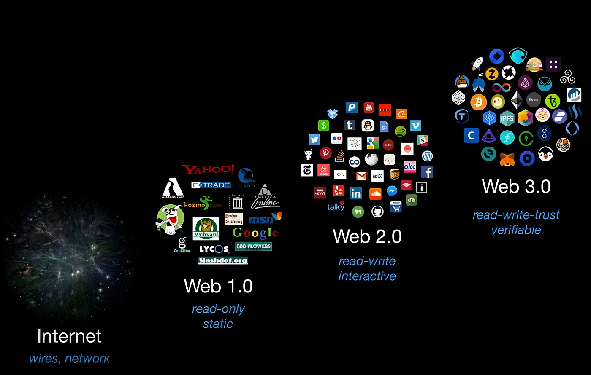

Article 1
L'histoire de l'évolution du Web
Le Web 1.0
L'histoire du Web commence en 1989 avec le développement par Tim Berners-Lee, qui est
considéré comme le père du World Wide Web. Ce Web 1.0 (parce que c'était son premier
développement) était essentiellement un support statique qui permettait de présenter des
informations aux utilisateurs qui accédaient aux services d'Internet à cette époque.
Autrement dit, vous ne pouviez lire que des informations et il n'y avait pas
d'interactivité. En fait, les outils pour utiliser ce site Web étaient initialement si
limités qu'il n'y avait pas d'images, pas d'interfaces graphiques et encore moins d'audio ou
de vidéo.
Pour vous donner une idée plus claire de ce dont nous parlons, dans l'image suivante, vous
pouvez voir le site Web de l'Académie, affiché dans ce qui serait une expérience Web 1.0,
certes spartiate mais démontrant clairement comment cela fonctionnait.
Plus tard, le Web 1.0 a commencé à s'améliorer avec l'arrivée de technologies telles que
celles fournies par les navigateurs Web tels que ViolaWWW, Mosaic, Netscape et Internet
Explorer. Chacun de ces navigateurs a ajouté de nouvelles améliorations qui ont rendu le Web
1.0 beaucoup plus coloré, voire interactif, même si ces technologies étaient souvent
incompatibles entre elles.
Le Web 2.0
En 1999, à peine 10 ans après sa naissance, le Web a commencé à
évoluer vers son prochain
niveau, le Web 2.0. L'arrivée de technologies telles que JavaScript (datant de 1995), PHP
(1995) et Java (1996) a permis au Web de passer d'une approche simplement statique à une
approche qui commencerait à avoir la capacité d'interagir avec l'utilisateur, permettant non
seulement lire des informations, mais aussi les écrire directement sur le Web et laisser
votre propre empreinte.
A ce stade, nous découvririons des services qui faisaient jusqu'à présent partie de notre
quotidien, tels que Google, Amazon, Facebook, Twitter, WordPress ou Blogger, la première
plateforme de blogs qui a ensuite été rachetée par Google. Avec le Web 2.0, en plus de
permettre la lecture et l'écriture d'informations, il a également fait un énorme bond en
avant dans l'interactivité et le multimédia. Des services tels que le streaming audio et
vidéo feraient le grand saut à ce stade (la naissance de la radio Internet et de YouTube,
pour donner des exemples).
Le Web 3.0

Nous sommes maintenant dans la construction du Web 3.0, une nouvelle évolution du Web qui nous permet de lire-écrire-approprier ce que nous écrivons dans les services Web, qui, à leur tour, évoluent d'un système centralisé à un système complètement décentralisé. Le Web 3.0 est l'union de technologies telles que le Web sémantique, l'intelligence artificielle, l'introduction de la technologie 3D, la réalité virtuelle, ainsi que l'arrivée de la technologie blockchain, des réseaux et services P2P pour accéder à ces nouvelles et puissantes applications.